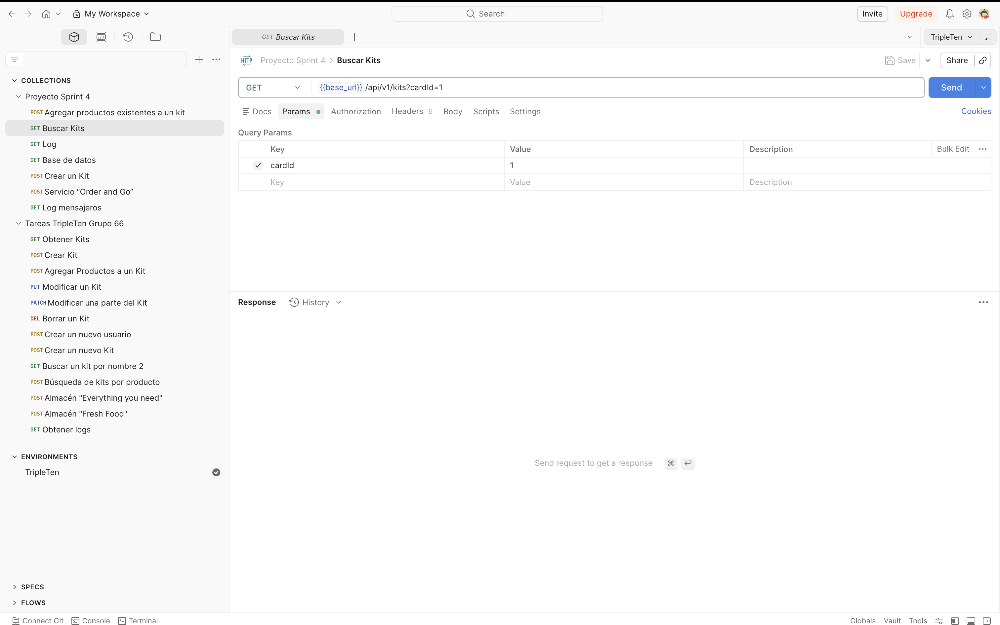
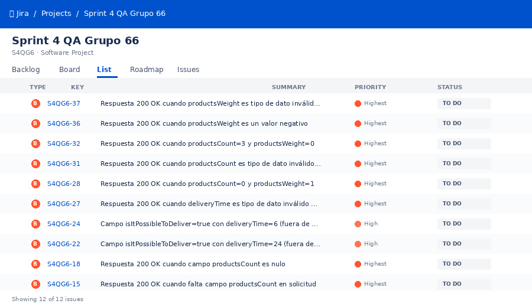
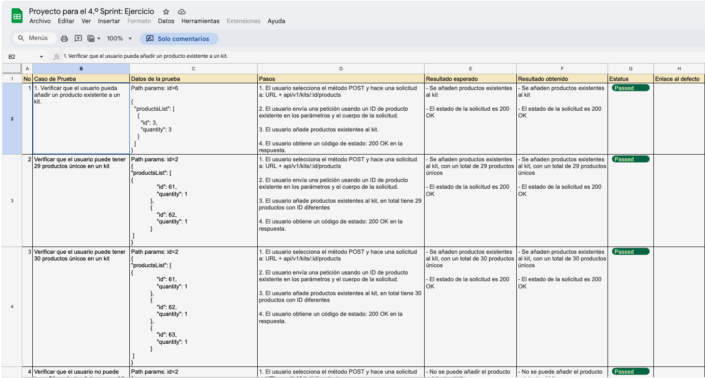
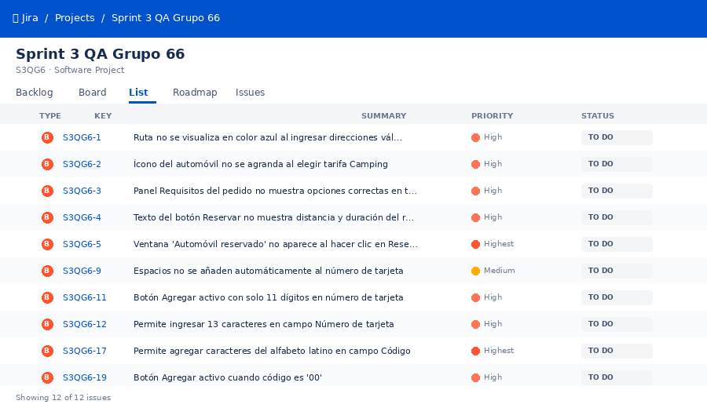
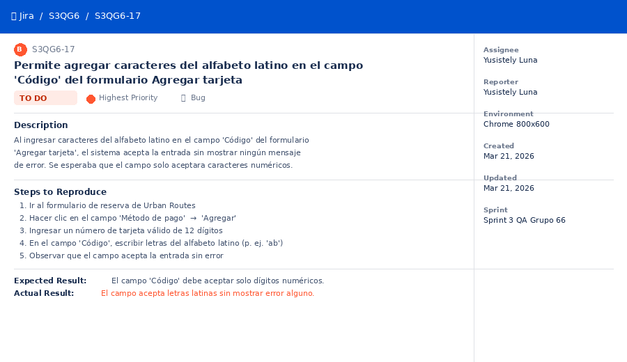
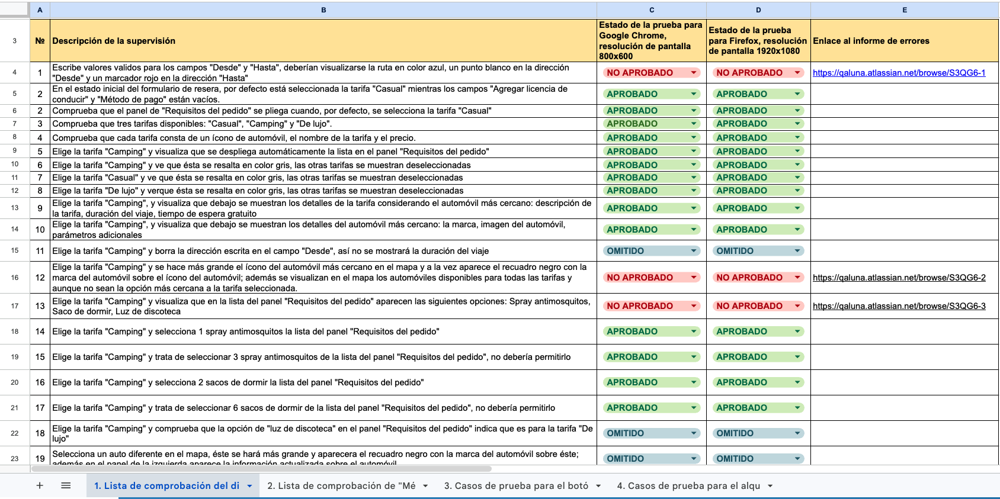

Industrial Engineer turned QA Engineer — 15 years preventing costly errors at multinationals, now applying that rigor to manual, web, API, mobile, and automated software testing.
📋 Table of Contents
Who I am
🔍 I am passionate about doing things well and doing them with purpose — whether designing a test case, leading an audit, or guiding a meditation at the start of a training session.
I began my career as an Industrial Engineer at global companies like Tupperware, DuPont and Procter & Gamble, focused on quality and continuous improvement. Later, at TSYS, I moved into tech, becoming a bridge between business and the Software Development team — coordinating annual OWASP training, gathering evidence for cybersecurity audits, updating compliance procedures, and reviewing WAF alerts with developers to resolve false positives.
Today I'm a QA Engineer Jr. trained at the TripleTen Latam Bootcamp, with hands-on experience in manual, web, API, mobile, and automated testing. My final project: end-to-end QA across a full ride-booking platform — covering web, mobile, API, and backend — documenting 81 defects in JIRA.
What this means for a hiring team: I combine fresh QA skills with 15 years of real experience preventing costly errors, leading audits, and translating between technical and business teams — so issues get caught early, communicated clearly, and resolved fast.
💻 Core skills: Manual, Web & API Testing (Postman, JIRA) · Automation Fundamentals (Python, Pytest, PyCharm) · SQL Fundamentals · ISO 9001/27001
What I work with
What I've built
Self-initiated project, outside any bootcamp: testing the search feature on a real public product — openlibrary.org — on the web and at the API level. 36 test cases designed (16 web + 20 API); execution and defect reports in progress.
End-to-end QA of a scooter rental platform across web, mobile, and API in three weeks — from a requirements mind map to 148 test cases and 81 documented defects. Cross-browser testing confirmed the same bugs in both Chrome and Opera, and API testing added a layer most testers skip: validating the database actually changed after each request.
Automated the full taxi-booking happy path — 11 scenarios from setting a route to confirming a driver — with a Selenium + Page Object Model framework. Solved real automation problems along the way: an SMS code pulled straight from Chrome's network logs instead of a real SMS service, and a 60-second explicit wait for a slow modal that would've made a naive test flaky.
Automated 9 tests validating the name field on Urban Grocers' kit-creation endpoint — boundary lengths, special characters, wrong types, and missing parameters. Built with a two-step auth flow (create user → get token → call the endpoint), a real-world pattern for API automation, with positive and negative assertions kept in separate, single-purpose functions.
Two technical exercises: isolating a specific IP range and splitting HTTP 400/500 errors into structured files on a remote Linux server with grep, then writing 4 SQL queries against a Chicago taxi-trip database to confirm a fleet shortage, flag under-sized companies, classify weather by hour, and compare trip volume across two dates — internalizing the difference between WHERE and HAVING along the way.
Tested the first Android build of Urban.Lunch — 62 cases across 6 screens on an emulated Pixel 10 Pro XL. Navigation and order tracking came back rock-solid (100% pass), but negative testing paid off fast: the dish counter accepted negative values and lost selected quantities on scroll, concentrating 7 of the 8 defects found in the core ordering flow.
Manually tested three API endpoints for kit creation and delivery — 72 cases covering valid, boundary, null, and wrong-type input. Found a consistent pattern worth flagging to any dev team: invalid requests kept returning 200 OK instead of the 400 Bad Request they should have.



Applied equivalence partitioning and boundary value analysis to a car-sharing booking form across two browsers. 27 defects found, most concentrated in the "Add Card" window — where invalid card data was accepted without validation, a real risk for a payment flow.



Track record
Automated the follow-up process using Microsoft Power Automate, improving on-time closure rate from 30% to 90%.
Led external audits achieving 0 critical findings and significantly improved a key customer's GMP audit score.
Supported the ISO 27001 certification for the Software Development department; formally recognized by the external auditor.
Let's talk
I'm actively looking for remote QA Engineer opportunities. Whether you want to discuss a role, a project, or just say hi — I'd love to hear from you.
Download CV (English)